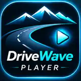

DriveWave
Player
One place for internet radio, TV streams, traffic and road cameras, supported YouTube playback and local audio or video. Designed for Android phones and compatible Android car head-unit screens.

Official DriveWave Player artworkDriveWave Player in action
Explore the radio player and the local files experience on an Android car screen.


Radio & favorites
Browse online radio stations, save favorites, and control playback from the media interface.
TV & live cameras
Open available streams, supported playlists and selected live-camera sources. Availability depends on third-party providers.
YouTube
Search and play through the supported YouTube integration. Search can require an API key.
Local and USB files
Explore compatible media on the device, including accessible USB storage.
Designed for cars
Comfortable controls for compatible Android car screens; no claim of official Android Auto integration.
Car Mode
Built with a safety-oriented video restriction while driving; never operate video controls while moving.
DriveWave Player is an independent media player. Content, streams and third-party services are subject to availability and their own terms. The Google Play publisher is Petrushevski; MONSI AI is the public app-family website.